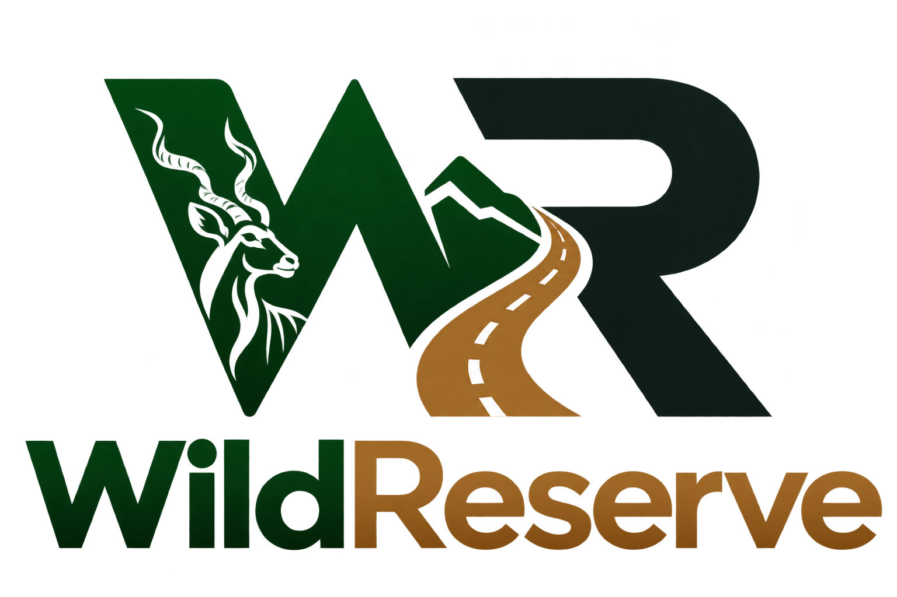
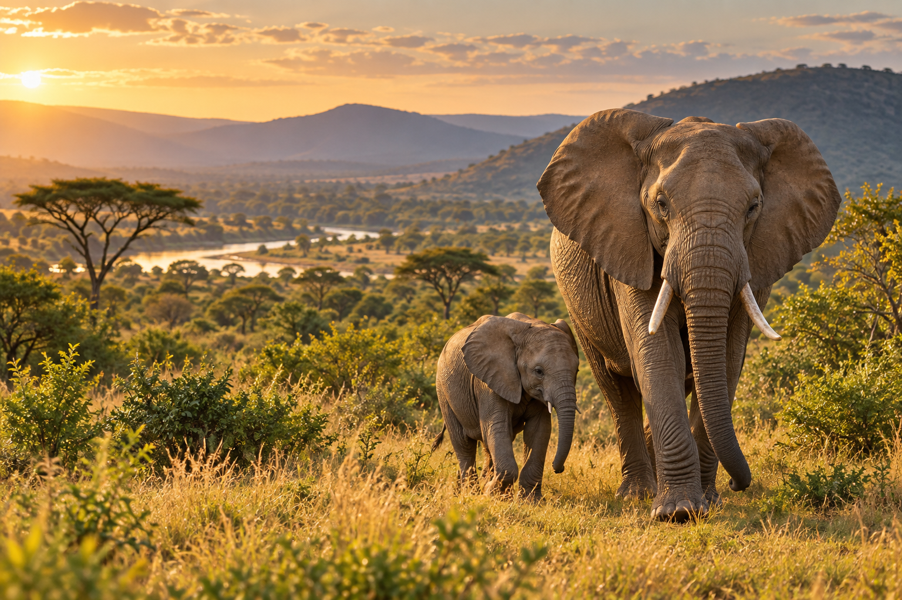
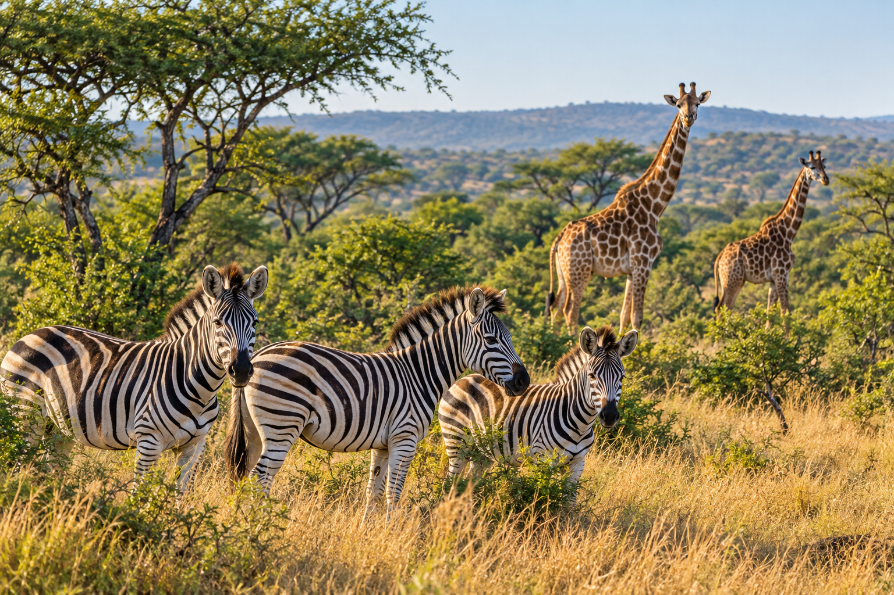

Your reserve,
mapped your way.
Draw boundaries, camps, roads and trails. Add gates, hides, boreholes, tanks and places. Record a GPS route, edit map points and mark routes closed.

Get the Android appMADE FOR LIFE ON THE RESERVE
From a sighting on a morning drive to the road that needs attention. Keep your reserve’s field knowledge together with WildReserve.

ONE APP. A SHARED PICTURE.
Practical tools for the people who care for a reserve, from everyday fieldwork to the next conservation conversation.
Draw boundaries, camps, roads and trails. Add gates, hides, boreholes, tanks and places. Record a GPS route, edit map points and mark routes closed.
Record sightings, snares, mortalities, injuries, fence damage, animal movements, game counts and rainfall. Guests record sightings; owners, managers and staff have the full field-record menu.
Search sightings, review monthly history and observation hotspots, and check rainfall by meter. Managers review suggested herd associations. Export maps, sighting reports and your permitted records.
TAKE WILDRESERVE INTO THE FIELD
Download the Android app to create your reserve or join by invitation. Owners and managers can set up their team, species list and access permissions in the app.
Direct APK download · 218.5 MB
Download Android APKThis is an early-access development build, supplied directly by WildReserve. It is not a Google Play release. iPhone support is planned.
How to install or updateAlready installed? Open the new APK to update in place. Keep the app installed to preserve pending offline records.
SHA-256

THE BIGGER PICTURE STARTS IN THE FIELDFROM BUSHVELD TO BRIEFING
A water point. A familiar herd. A road less travelled. Turn everyday observations into a useful record for your reserve.
GET READY FOR YOUR NEXT DRIVE
Download the APK on your Android phone. On a laptop, download it and transfer the file to your phone. The APK does not run on a laptop or iPhone.
Android may ask you to allow installation from your browser or file manager. Allow that source only if you trust this download, and turn the permission off afterwards.
Create an account and confirm your email, then create a reserve or paste an invitation under Reserve tools → Create or join a reserve. Guests can paste their invitation on the sign-in screen. Connect before heading out so reserve data can load.
A FEW FIELD NOTES
Reserve owners, managers and staff who need a shared record of their land, wildlife sightings and fieldwork.
The current download is for Android. iPhone support is planned; there is no iPhone download yet.
You can capture sightings offline and synchronise later. Sign in and load your reserve before leaving coverage. Offline sighting capture does not guarantee offline background map imagery.
Reports summarise recorded observations for selected species and dates. One animal may be seen several times. Use these records alongside survey methods and professional judgement when making conservation decisions.
This is an early-access development APK, distributed directly through WildReserve’s GitHub release. It is not a Google Play release. Keep original field records and check important exported documents before relying on them.
YOUR RESERVE RECORDS
WildReserve stores field records on your device and synchronises them to the dedicated WildReserve service when connected. Location is used when you choose GPS or route capture. Reserve owners and managers control membership, feature permissions and guest expiry. Field operations are private to the reserve team.
Guest sightings remain part of the reserve's observation history after guest-map visibility ends. Use the app's record export before clearing device storage. Ask your reserve owner or manager about access to your reserve records. This download website does not ask for your password or collect reserve sightings.